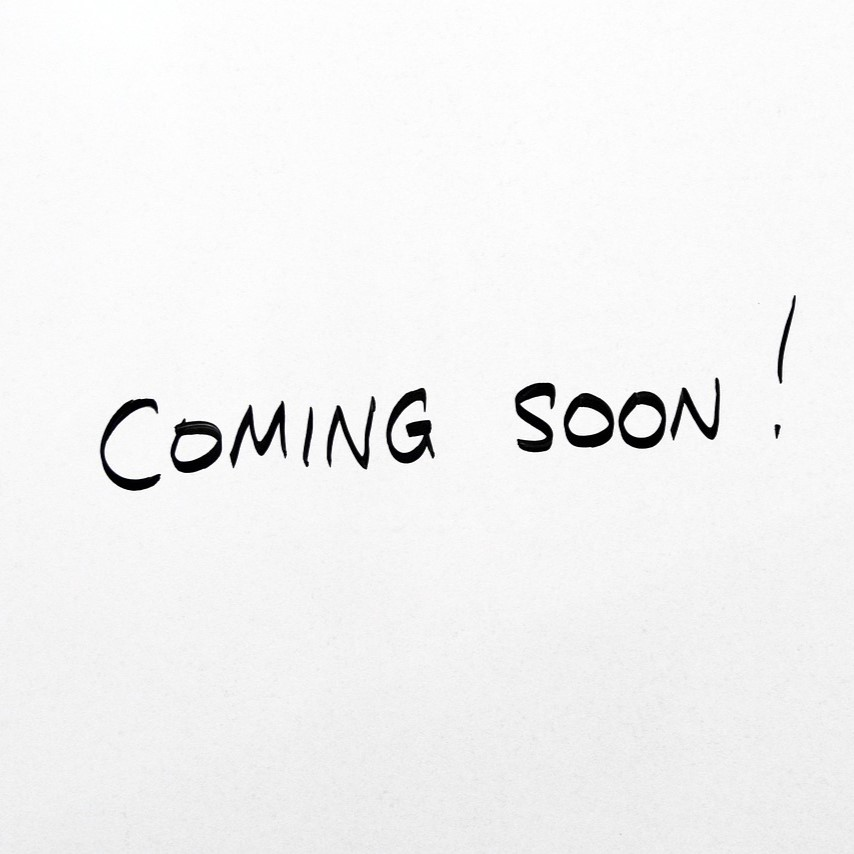

Project Overview
- Developed a robotic wrist with adaptive stiffness capabilities.
- Aimed to enhance dexterity and environmental adaptability.
- Published in IEEE T-RO, pending final publication.
Problem Definition
- Existing robotic wrists lacked adaptability in complex environments.
- Limited grasp stability and control in variable conditions.
Solution
- Developed an adaptable wrist mechanism with variable stiffness control.
- Integrated advanced sensors to enhance environmental interaction.
Results
- Achieved improved adaptability and environmental interaction.
- Validated increased grasping efficiency through real-world testing.
- Presented successful demos and accepted for publication.
My Contribution
- Conceptualized and designed the wrist mechanism with variable stiffness.
- Conducted in-depth analysis and testing for different grasping scenarios.
- Led the project’s integration into robotic applications.
Project Media
Stiffness Variation
Demonstration: Grasping Task
Demonstration: Practical Application
Project Gallery
